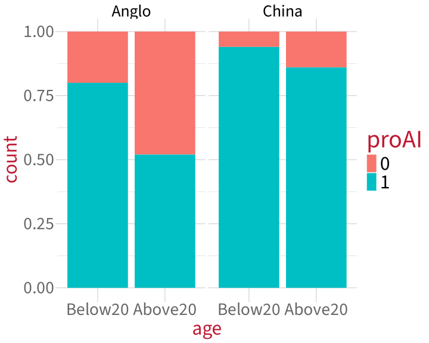
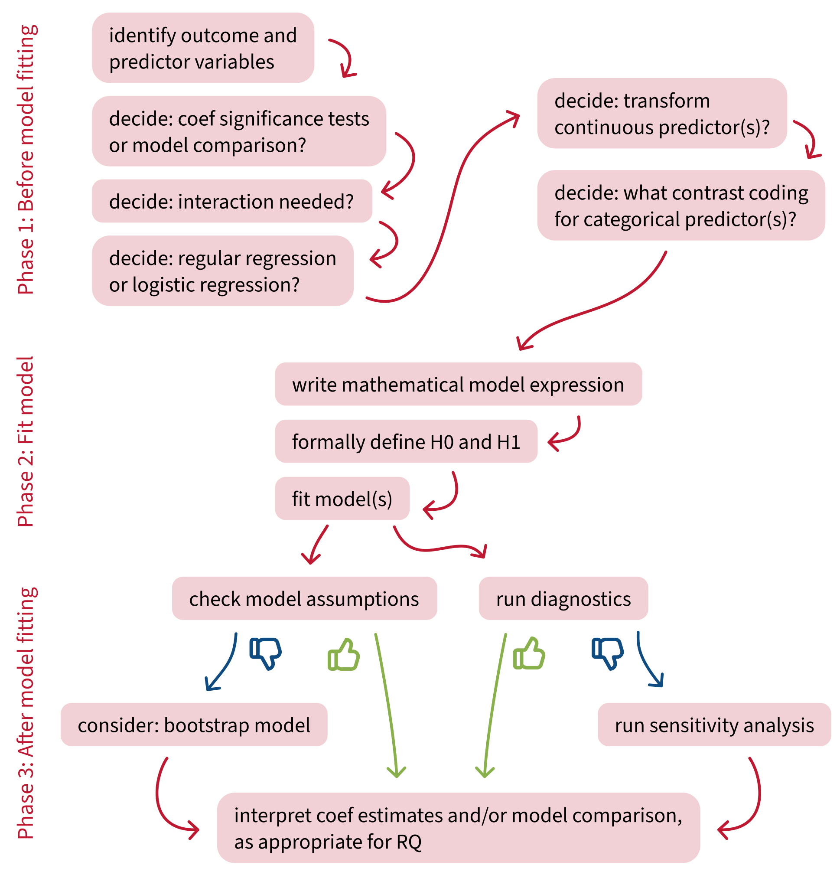
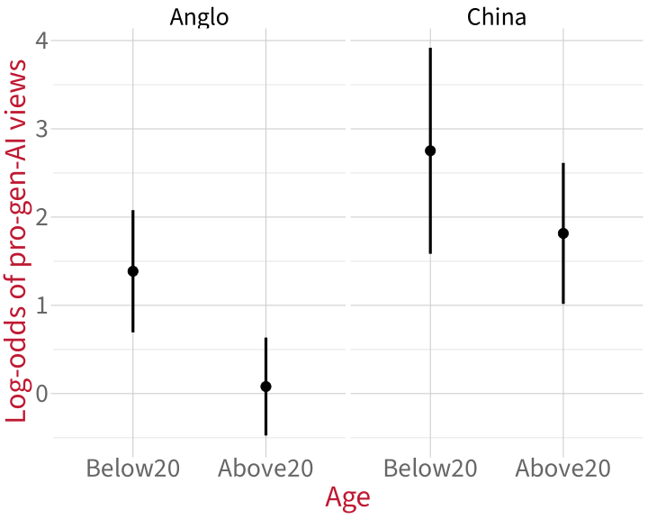
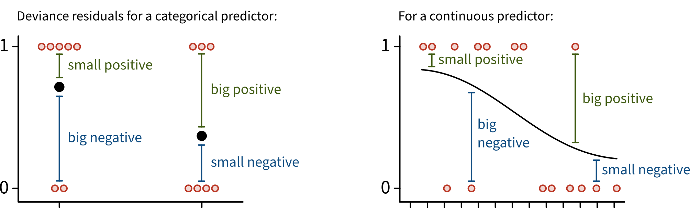

Code
proAI_data |>
ggplot(aes(x = age, fill = proAI)) +
geom_bar(position = 'fill') +
facet_wrap(~ culture) +
theme(
strip.text = element_text(size=28)
) +
labs(
y = 'Proportion'
)
Data Analysis for Psychology in R 2
Department of Psychology
University of Edinburgh
2026–2027
TODO
How do we interpret interactions in logistic regression models?
How do we measure model fit for logistic regression models?
What assumption does a logistic regression model make, and how do we check it?
How do we identify influential observations in logistic regression models?
How do we statistically compare two nested logistic regression models?

proAI = 0 means “no” (our “failure” outcome), proAI = 1 means “yes” (our “success” outcome).
Our model will estimate the probability of people being pro-generative-AI as a function of their culture, their age group, and the interaction between those two predictors.
First, check the contrasts, so we can write the variables correctly:
So (remember there’s no \(\epsilon\) in logistic regression models):
\[ \text{logodds(proAI)} = \beta_0 + (\beta_1 \cdot \text{culture}_\text{China}) + (\beta_2 \cdot \text{age}_\text{Above20}) + (\beta_3 \cdot \text{culture}_\text{China} \cdot \text{age}_\text{Above20}) \]
Write:
$$
\text{logodds(proAI)} = \beta_0 +
(\beta_1 \cdot \text{culture}_\text{China}) +
(\beta_2 \cdot \text{age}_\text{Above20}) +
(\beta_3 \cdot \text{culture}_\text{China} \cdot \text{age}_\text{Above20})
$$
Call:
glm(formula = proAI ~ culture * age, family = binomial, data = proAI_data)
Coefficients:
Estimate Std. Error z value Pr(>|z|)
(Intercept) 1.386 0.354 3.92 0.000088 ***
cultureChina 1.365 0.693 1.97 0.0487 *
ageAbove20 -1.306 0.453 -2.88 0.0039 **
cultureChina:ageAbove20 0.370 0.852 0.43 0.6641
---
Signif. codes: 0 '***' 0.001 '**' 0.01 '*' 0.05 '.' 0.1 ' ' 1
(Dispersion parameter for binomial family taken to be 1)
Null deviance: 210.76 on 199 degrees of freedom
Residual deviance: 182.47 on 196 degrees of freedom
AIC: 190.5
Number of Fisher Scoring iterations: 5p_proAI_logodds <- Effect(focal.predictors = c('culture', 'age'), mod = proAI_mdl) |>
as.data.frame(type = 'link') |>
ggplot(aes(x = age, y = fit)) +
# points for the group mean estimates
geom_point(size = 5) +
# error bars for the 95% CIs
geom_errorbar(
aes(
ymin = lower,
ymax = upper),
width = 0,
linewidth = 1.5
) +
# axis labels for clarity
labs(
y = 'Log-odds of pro-gen-AI views',
x = 'Age'
) +
facet_wrap(~ culture) +
theme(strip.text = element_text(size = 28))
p_proAI_logodds
Estimate Std. Error z value Pr(>|z|)
(Intercept) 1.386 0.354 3.92 0.000088 ***
cultureChina 1.365 0.693 1.97 0.0487 *
ageAbove20 -1.306 0.453 -2.88 0.0039 **
cultureChina:ageAbove20 0.370 0.852 0.43 0.6641
---
Signif. codes: 0 '***' 0.001 '**' 0.01 '*' 0.05 '.' 0.1 ' ' 1(Intercept):
plogis(1.39) = 80.1%).cultureChina:
Estimate Std. Error z value Pr(>|z|)
(Intercept) 1.386 0.354 3.92 0.000088 ***
cultureChina 1.365 0.693 1.97 0.0487 *
ageAbove20 -1.306 0.453 -2.88 0.0039 **
cultureChina:ageAbove20 0.370 0.852 0.43 0.6641
---
Signif. codes: 0 '***' 0.001 '**' 0.01 '*' 0.05 '.' 0.1 ' ' 1ageAbove20:
cultureChina:ageAbove20:
Call:
glm(formula = proAI ~ culture * age, family = binomial, data = proAI_data)
Coefficients:
Estimate Std. Error z value Pr(>|z|)
(Intercept) 1.386 0.354 3.92 0.000088 ***
cultureChina 1.365 0.693 1.97 0.0487 *
ageAbove20 -1.306 0.453 -2.88 0.0039 **
cultureChina:ageAbove20 0.370 0.852 0.43 0.6641
---
Signif. codes: 0 '***' 0.001 '**' 0.01 '*' 0.05 '.' 0.1 ' ' 1
(Dispersion parameter for binomial family taken to be 1)
Null deviance: 210.76 on 199 degrees of freedom
Residual deviance: 182.47 on 196 degrees of freedom
AIC: 190.5
Number of Fisher Scoring iterations: 5For logistic regression models, we measure model fit using deviance:
| the kind of model | how we measure its fit |
|---|---|
| standard linear regression | residual sum of squares |
| logistic regression | deviance |
Null deviance: 210.76 on 199 degrees of freedom
Residual deviance: 182.47 on 196 degrees of freedomNull deviance: the deviance of an intercept-only version of the model: proAI ~ 1.
Residual deviance: the deviance of the actual model we fit: proAI ~ culture * age.
The smaller number represents the model with better fit.
But to know whether the full model has a significantly better fit than the intercept-only model, we’d need to actually statistically compare models.
We’ll do that soon, but first…
The mathematical model formulation for standard linear regression includes the error term \(\epsilon\):
\[ y = \beta_0 + (\beta_1 \cdot x) + \epsilon \]
and we have lots of assumptions about these errors: independence, normality, equal variance.
In contrast, as we’ve seen, the mathematical model formulation for logistic regression has no such error term:
\[ \text{logodds}(y) = \beta_0 + (\beta_1 \cdot x) \]
Logistic regression doesn’t have errors \(\epsilon\), therefore no assumptions about the errors, so we don’t need to check those assumptions anymore!
For each observation, logistic regression has:

For a logistic regression model to be a good choice for modelling this data, the model’s standardised deviance residuals should not be smaller than –3 or bigger than 3.
Extract a model’s standardised deviance residuals using rstandard() with type = 'deviance':
And plot them:
All within –3 to 3 ✅
Same as in standard linear regression models, we check for influential observations using Cook’s Distance.
Recall that Cook’s Distance = the average distance that the predicted outcome values will move, if a given data point is removed.
For logistic regression, we can compare to some threshold values:
Extract Cook’s Distance values using cooks.distance():
Everything well below 0.5, so no moderately or highly influential values ✅
(If we did find influential values, follow the process outlined in Lecture 08: double-check your data for mistakes, and if in doubt, run a sensitivity analysis.)
Null deviance: 210.76 on 199 degrees of freedom
Residual deviance: 182.47 on 196 degrees of freedomNull deviance: the deviance of an intercept-only version of the model: proAI ~ 1.
Residual deviance: the deviance of the actual model we fit: proAI ~ culture * age.
To know whether the full model has a significantly better fit than the intercept-only model, we will statistically compare models.
To do that, we compute the difference in deviance = null deviance minus residual deviance.
\[ 138.59 - 111.21 = 27.38 \]
And like always, we want to know: How likely is it that we would observe this value (or one more extreme) just by chance, if there were no difference in fit between the two models?
To get a p-value, we can compare the difference in deviance to a \(\chi^2\) distribution (the same way we’d compare an observed \(t\) statistic to the \(t\) distribution).
Fit the null model (aka the intercept-only model):
Run the model comparison using the anova() function with test = 'Chisq' (but make sure to report this as a model comparison, not an ANOVA!):
Analysis of Deviance Table
Model 1: proAI ~ 1
Model 2: proAI ~ culture * age
Resid. Df Resid. Dev Df Deviance Pr(>Chi)
1 199 211
2 196 182 3 28.3 0.0000031 ***
---
Signif. codes: 0 '***' 0.001 '**' 0.01 '*' 0.05 '.' 0.1 ' ' 1Interpretation: This difference in deviance is significantly different from zero, which means that the full model fits significantly better than the intercept-only model (\(\chi^2\)(3) = 28.3, \(p\) < .001).
The model comparison we just did (proAI ~ 1 vs. proAI ~ culture * age) is not very useful (because the full model is almost always a huge improvement!)
In fact, most model comparisons are not very useful. For example, using model comparison to…
So when is model comparison useful?
glm(proAI ~ age * culture + O + C + E + A + N)OCEAN slope coefficient may be non-significant.proAI ~ age * culture.What you’re doing here is not easy. I hope you are proud of yourselves for all your hard work.
How do we interpret interactions in logistic regression models?
How do we measure model fit for logistic regression models?
What assumption does a logistic regression model make, and how do we check it?
How do we identify influential observations in logistic regression models?
How do we statistically compare two nested logistic regression models?
Tasks:
 Work on exercises in labs
Work on exercises in labs
 Complete the weekly quiz
Complete the weekly quiz
Get support:
 Consult the flash cards
Consult the flash cards
 Ask questions anonymously on Piazza
Ask questions anonymously on Piazza
 We really like seeing you in office hours!
We really like seeing you in office hours!